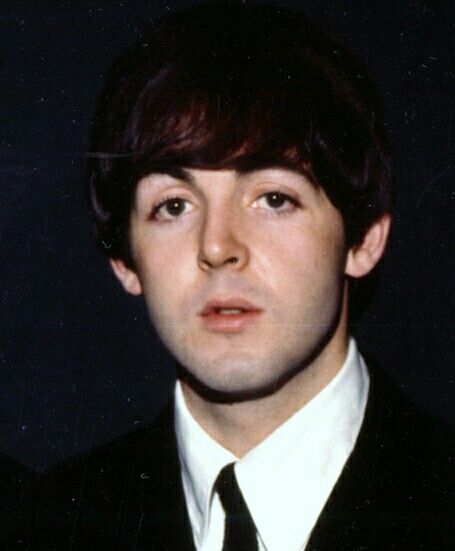

Sir James Paul McCartney (nacido el 18 de junio de 1942) es un músico inglés. Alcanzó fama mundial con los Beatles , para quienes fue bajista y tecladista , y compartió la composición principal y la voz principal con John Lennon .
McCartney es conocido por su enfoque melódico al tocar el bajo, su versátil registro vocal de tenor y su eclecticismo musical , explorando géneros que van desde el pop anterior al rock and roll hasta la música clásica, las baladas y la electrónica
Nacido en Liverpool , McCartney aprendió a tocar el piano, la guitarra y a componer canciones de forma autodidacta durante su adolescencia, influenciado por su padre, músico de jazz, y por artistas de rock and roll como Little Richard y Buddy Holly. Muchas de sus canciones con los Beatles, incluyendo " And I Love Her ", " Yesterday ", " Eleanor Rigby " y " Blackbird ", se encuentran entre las canciones más versionadas de la historia.
McCartney es uno de los artistas musicales con mayores ventas de todos los tiempos , con ventas estimadas de 100 millones de discos. Ha escrito o coescrito un récord de 32 canciones que han encabezado la lista Billboard Hot 100 y, a partir de 2009 ,